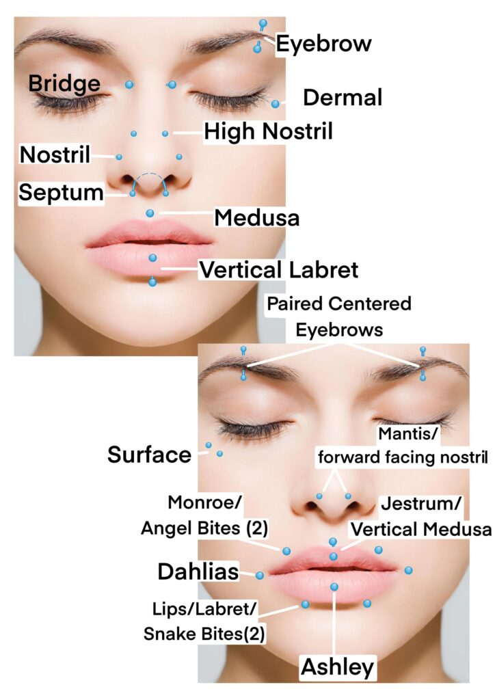

Piercings en el rostro
Los piercings faciales son perforaciones hechas en la cara para la colocación de joyas. Existen muchos tipos diferentes, como los piercings de cejas, nariz, labios, mejillas, entre otros. Se usan como forma de expresión y decoración, y pueden variar en su estilo y ubicación.
Tipos de piercings faciales comunes:
- Boca: Piercings de labio superior e inferior, como labret, medusa, monroe, frenillo de labio superior, lengua, entre otros.
- Nariz: Septum, nostril, puente de la nariz.
- Cejas: Piercings de ceja, eyebrow piercing.
- Mejillas: Cheek piercing o piercing en la mejilla, a veces simétricos, microdermal, surface, entre otros.
- Rhino Perforación en la punta de la nariz, que se asemeja al cuerno de un rinoceronte.
- Nasallang: Perforación triple que atraviesa las dos fosas nasales y el tabique.
Volver arriba